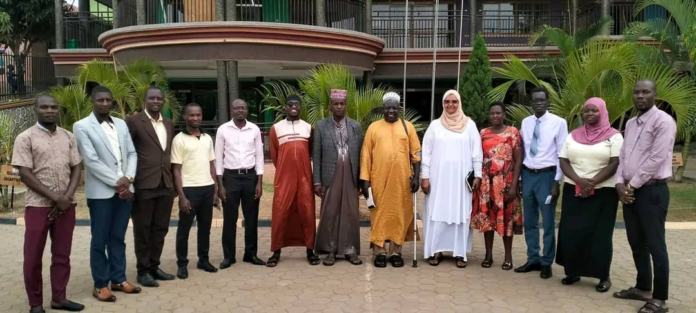

We’d be happy to hear from you
Contact Us
Get in touch about admissions, academics or school life.
School office
Message on WhatsApp ↗
Let’s start a conversation.
For the latest information about admission places, fees, school hours and visits, please contact the school directly.
Location
Bwaise–Nabweru Road, near the junction, Uganda.
Open directions in Google Maps ↗Call the school
☪
Buraaq Islamic Primary SchoolEnglish and Islamic learning
Find us
Visit the school
Use the map search to plan your journey to Bwaise–Nabweru Road near the junction. Please confirm the exact entrance with the school before travelling.
Our educators
Teachers who guide and encourage
Our school values educators who support academic development, Islamic learning and positive character. Contact the office for current staff names, qualifications and consultation times.
Class teachers
Support learners across primary subjects, monitor progress and work with families.
Islamic studies educators
Guide learners in Qur’an recitation, Islamic studies and respectful conduct.

School leadership
Coordinate teaching, learner welfare, communication and school development.